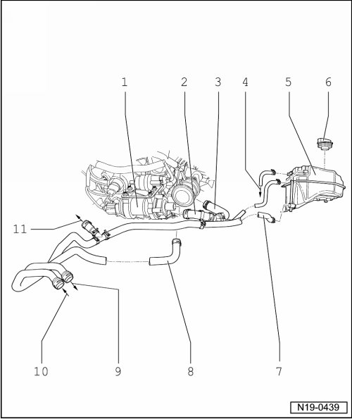

Cooling System Components, Body Side, Assembly Overview
Cooling System Components, Body Side, Assembly Overview
CAUTION!
When doing any repair work, especially in the engine compartment, pay attention to the following due to clearance issues:
• Route all the various lines (e.g. for fuel, hydraulics, EVAP system, coolant, refrigerant, brake fluid and vacuum lines and hoses) and electrical wiring so that the original positions are restored.
• Especially concerning the coolant hoses --> [ (Item 2) Coolant hose ] and --> [ (Item 3) Coolant hose ] , ensure that there is sufficient clearance between them and to all moving or hot components, to prevent damages.

1 After-run coolant pump (V51)
• Location of pump --> [ Location of ]
2 Coolant hose
• Ensure seated tightly
• To after-run coolant pump (V51)
3 Coolant hose
• Ensure seated tightly
• From cylinder head
4 From radiator
5 Expansion tank
• Perform cooling system leakage test with cooling system tester (V.A.G 1274) and adapter (V.A.G 1274/8)
• Depending on optional equipment, connection may be sealed with a blanking plug.
6 Sealing cap
• Check using cooling system tester (V.A.G 1274) and adapter (V.A.G 1274/9)
• Test pressure 1.4 to 1.6 bar
7 Coolant hose
• Ensure seated tightly
• From heat exchanger for heater unit
8 Coolant hose
• Ensure seated tightly
• From after-run coolant pump (V51)
9 To heat exchanger for heater unit
10 From heat exchanger for heater unit
11 To thermostat housing
Location of After-Run Coolant Pump (V51)

The after-run coolant pump (V51) - 2 - is secured with damper rings to a bracket behind the cylinder head below the evaporative emissions (EVAP) canister purge regulator valve (N80).